IAAC · MaCAD · Winter 2021
Charge Pavilion
A continuous structural canopy, tuned for a tropical public site and layered with a responsive shade screen.
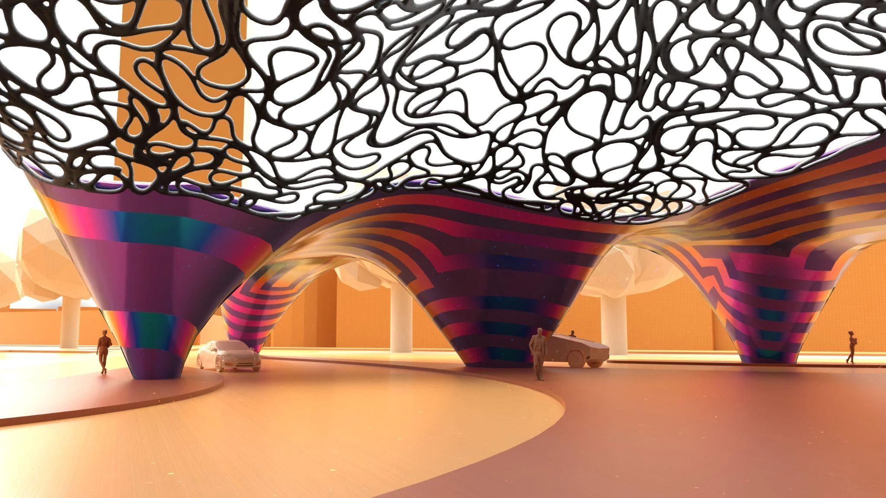
Charge Pavilion is a group proposal for Davao City, Philippines. Its roof and columns are conceived as one continuous minimal surface: a geometry that can remain fluid without treating structure as an afterthought.
Above it, a differential-growth pattern becomes a second, porous canopy. The two systems work together to make a shaded public interior while keeping the project visibly rooted in its computational process.
Project premise
The project asks how a large, expressive canopy can become legible as a system. Environmental analysis, form finding, mesh topology and pattern growth are not presented as separate images; each decision informs the next one.
01 — Davao City
Designing shade from the site outward.
Davao’s hot tropical climate makes protection from direct radiation a primary architectural requirement. The early studies trace the site boundary, vehicle movements and access paths before defining the pavilion footprint and its roof field.
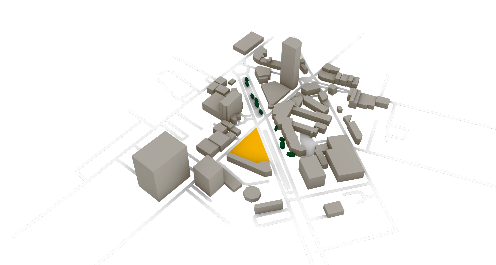
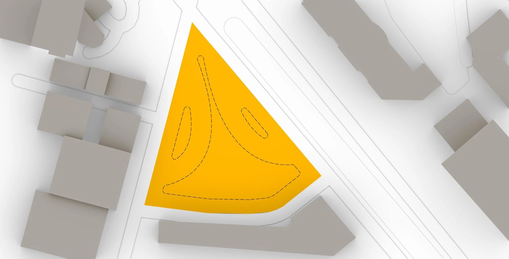
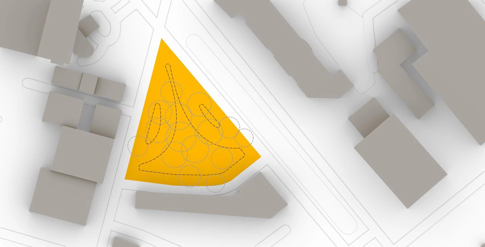
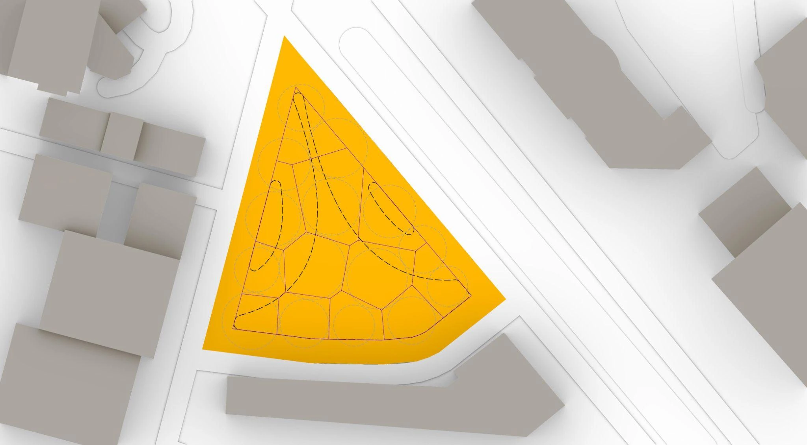
02 — Minimal surface
A roof and its supports, formed as one equilibrium geometry.
Minimal surfaces offer a way to rationalise an amorphous canopy. With mesh topology, anchors and relaxation goals, the roof settles into a continuous form where columns emerge from the same surface rather than being added afterward.
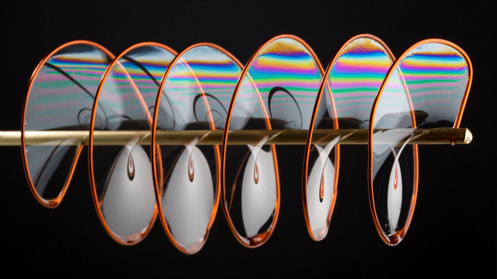
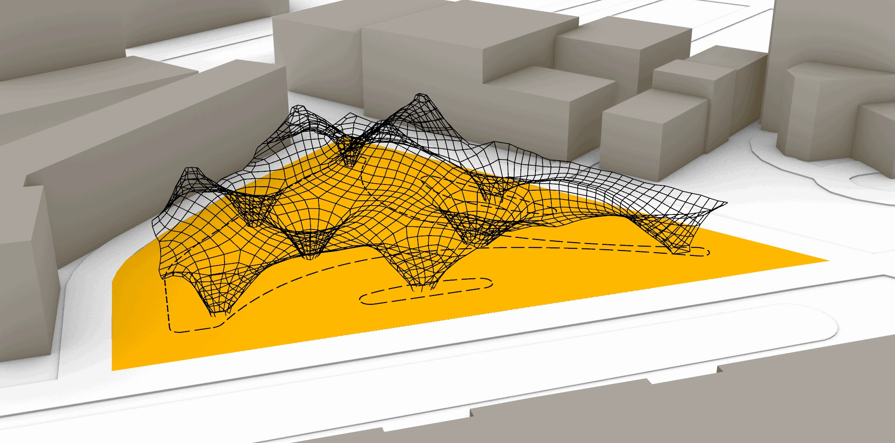
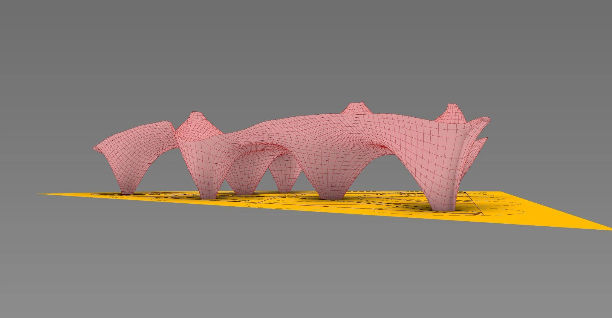
03 — Environmental + structural studies
Testing solar exposure and structural behaviour.
The roof height was varied through Galapagos evolutionary optimisation to reduce annual solar radiation. Structural studies then visualised principal stress, utilisation and displacement across the same continuous surface.
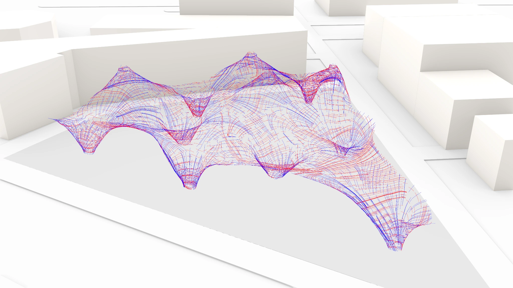
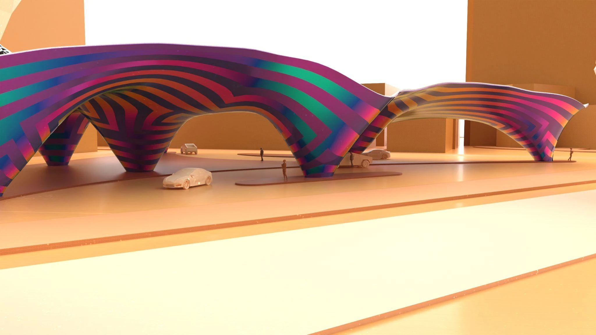
Workflow: Rhino / Grasshopper · Kangaroo form finding · Galapagos environmental optimisation · MeshBurner topology management · structural analysis.
04 — Differential growth
Differential growth forms a porous shade layer.
Differential growth is applied as an independent, permeable layer rather than as ornament. Curves are attached to the surface and developed through segment length, collision and angle goals, allowing the pattern to respond locally while preserving the larger canopy geometry.
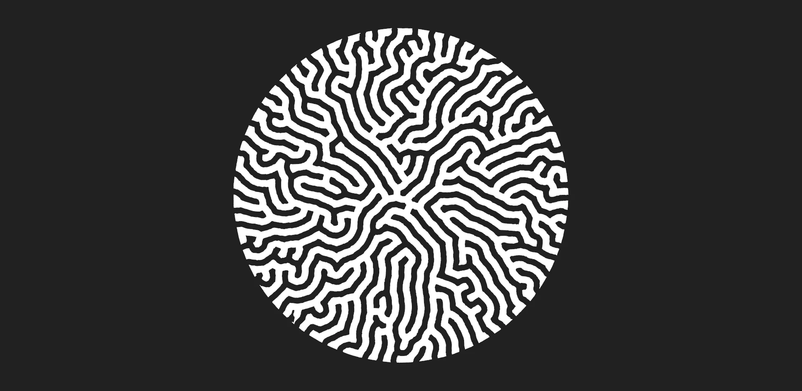
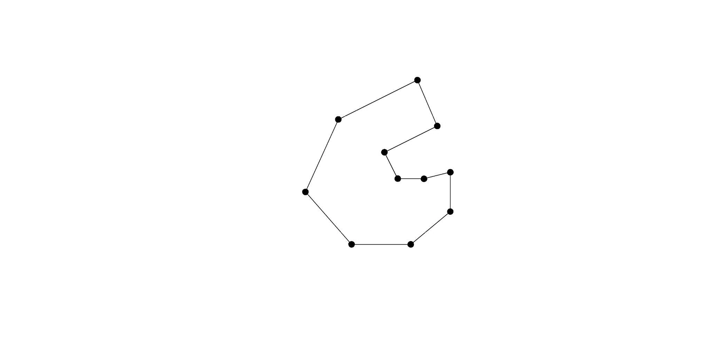
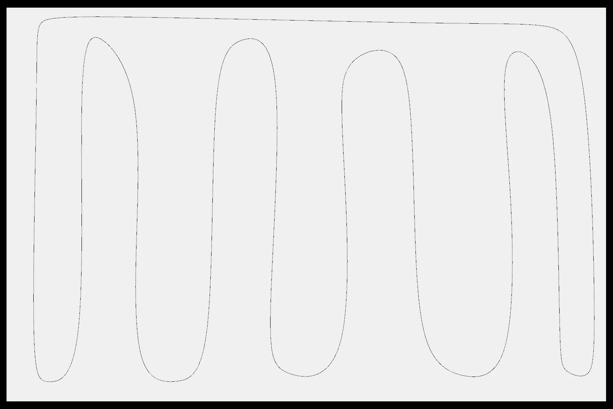
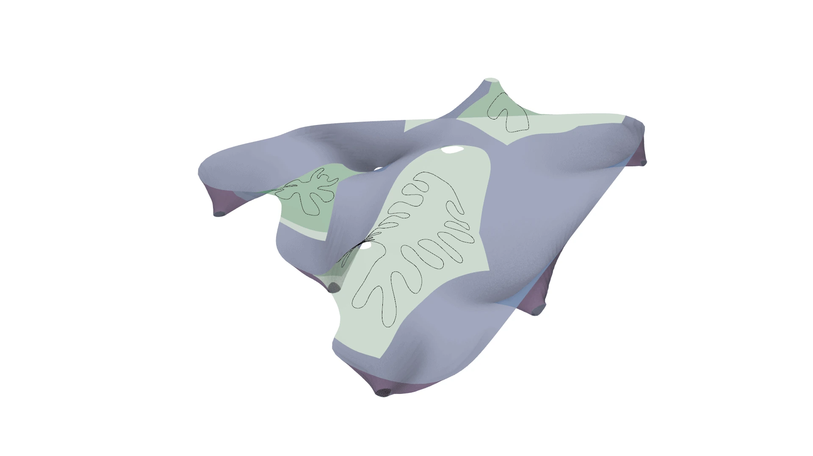
05 — Proposal
A civic canopy with a visible computational lineage.
The final pavilion keeps its systems intelligible: a flowing primary surface structures the public space, while the lighter differential-growth layer filters sun above it. The final renders make the project’s environmental ambition spatial—shade, colour and movement define the experience beneath the canopy.
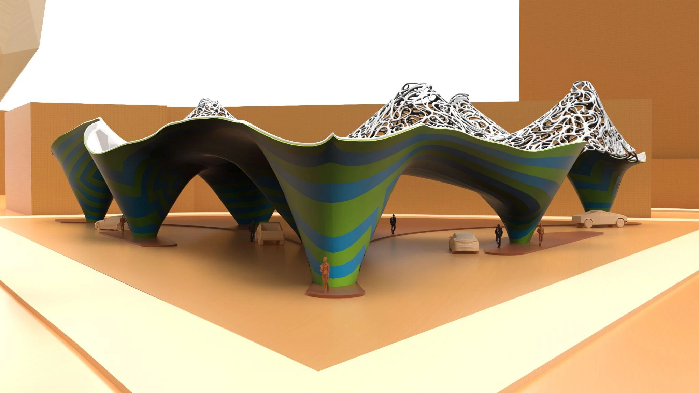
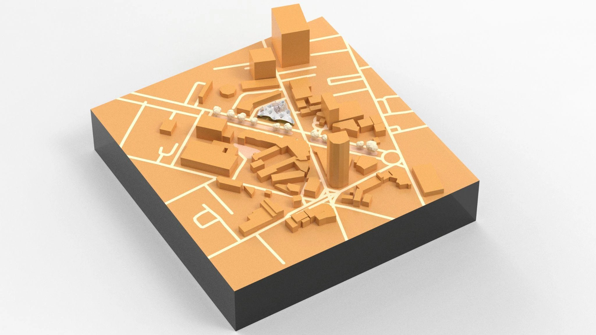
- Form finding
- Minimal surfaces + Kangaroo
A mesh, anchors and relaxation goals establish continuity between roof and support conditions.
- Performance
- Environmental optimisation + structural testing
Roof heights are tested against radiation while structural behaviour is read through the same geometry.
- Envelope
- Differential growth
Growth rules turn a surface-bound curve system into a locally responsive shade field.
Credits
Charge Pavilion was developed at IAAC within the Master in Advanced Computation for Architecture and Design, Complex Forming 1.S.3: Environmental + Structural Design.
Team: Naitik Sharma and Neil John Bersabe. Faculty: Rodrigo Aguirre. Assistant: Hesham Shawqy.
Project renders and diagrams come from the team’s IAAC submission. Reference imagery appears within that presentation. MeshBurner technical references credit Hesham Shawqy and Laurent Delrieu.
View the IAAC project documentation